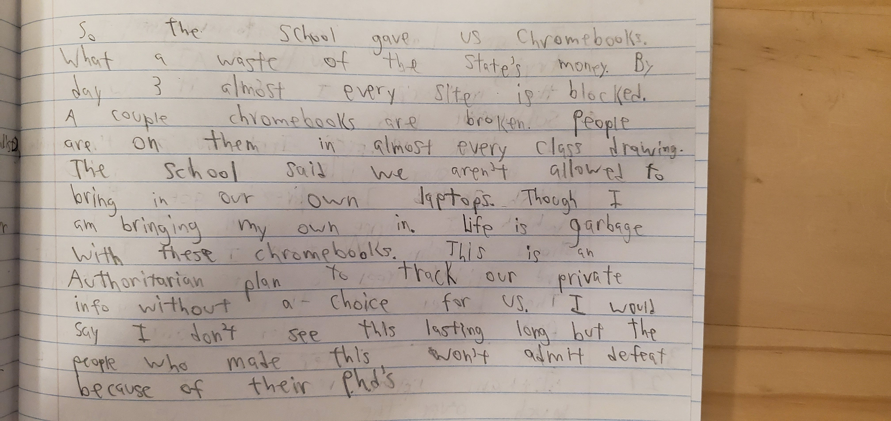

MP3 Grading Conference
Note: This is an overview due to the length of the Podcast. I would recommend reading this, then listening to the podcast. There are some things in here that are not in the podcast but the podcast goes into more detail. You might want to do my conference last. There are three versions of the video. I have the time to watch it in its full normal glory. I don't have to much time. This is as fast as I can get it before it sounds like we are havng strokes.
Overview
I try to put out work that improves on past work. My HAC score is 100%, which shows I am turning Everything in on time.
Personal Essay
My first Ideas were hot garbage. They didn't have that sticky stuff. After some thought, I decided to use the time I caught a fish. I took this Idea, and with the help of my classmates and teacher, I was able to improve and expand upon my ideas. This allowed me to capture the sticky stuff. For example, I used feedback from Nick to improve my turn from a harsh turn to that of a Sunday drive. Also I remove expletives. For example "When I was fishing, the whole area was secluded and peaceful. I didn’t think this was the whole answer but it was the right step towards it." became "There was a faint breeze in the air, the water flowed slowly, the trees were tall and blocked most of the sun".
Blog
From MP2 the Anthem blog post was a rant lacking in images and other multiple media items. It was good but it could have been improved. Comparing that to my Romeo and Juliet blog post, it has more structure than the Anthem and has more images and links. It has more detail, but I feel I could have gone more in-depth in the Zeffirelli vs Luhrmann section. My feedback from a classmate said it was "Slightly Repetitive".
Independent Reading
I always write down the words I don't know when I read. It helps with understanding what J.R.R. Tolkien is saying in The Lord of the Rings: The Two Towers. He is from South Africa/the Orange Free State and he has some language that is not common in America. Also, it is a fantasy book so there is more language not used in America.
Discussions
In past marking periods I have not participated much in Touchstones Discussions. This MP we have not had many due to weather. I have participated once or twice, which is an improvement but not a large one. In the Socratic Seminar, I talked as it is a smaller group and is easier for me to deal with.
Freewriting
Here is the free writing rubric MP1:


In MP3 I put the freewriting focus and persistence at high achieving. For Fluency, I put it in high achieving, at minimum, in the middle leaning on high achieving. Voice is high achieving as it is an emotionally charged piece. The thinking was low high achieving as I branch out with my ideas but don't connect them to other things.

For Reading, I chose the poem from 3/5. It is short, but I believe that is because of the time given. For focus and endurance, I would give it high achieving because it stays on topic and I wrote for the whole time. For fluency, I would give it high achieving though it is short so that could affect this. For voice, I would give it high achieving because it sounds like something I would say and has confidence. Thinking would be low high achieving because it is structured and develops the ideas, though it is short so that could affect this.
Under view
My work as a writer has improved, I use more detail and write clearer. As a reader, I am pretty much the same but I do not read every night due to my schedule. In discussions, I have improved but not by much, though this can be accounted to the weather causing fewer discussions. Overall I would say "A" range for this marking period. A- at least, and A+ at most.